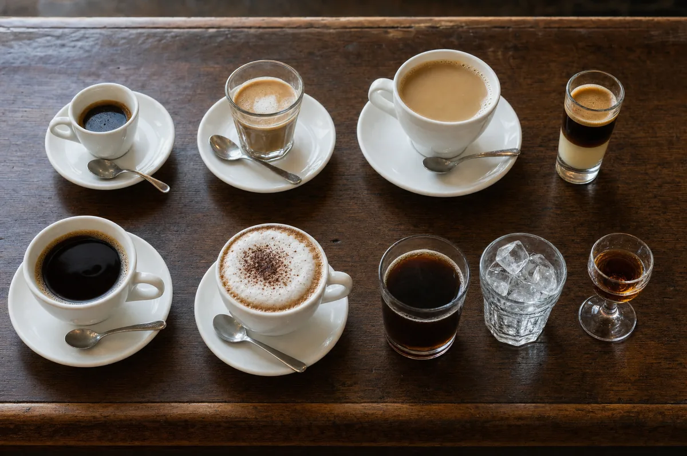
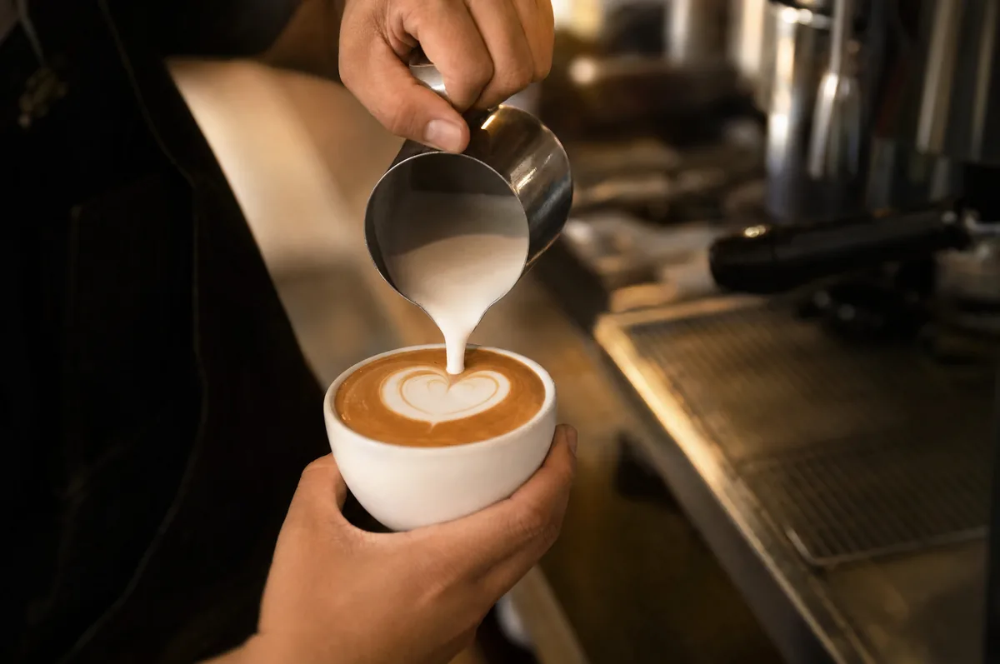
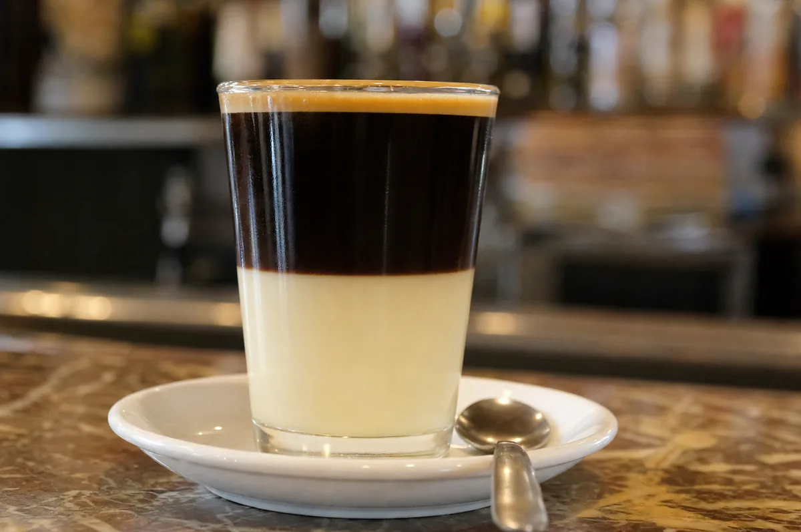

Inicio / Journal / Tipos de café: guía de bebidas, nombres y cómo pedirlos en España
Guías y consejos
Tipos de café: guía de bebidas, nombres y cómo pedirlos en España
Los tipos de café más pedidos en España son el solo, el cortado, el café con leche, el americano, el capuchino, el bombón, el carajillo y el café con hielo. Casi todos parten del mismo café espresso; lo que cambia es lo que le añades: leche, espuma, agua, leche condensada o licor. Y los nombres cambian según la región: lo que en Cataluña es un «tallat» en Madrid es un cortado.

Si te pierdes en la carta de una cafetería, tranquilo: casi todo es una variación de unos pocos ingredientes. Esta guía te explica qué lleva cada café, cómo se llama en cada zona, cómo se prepara y cómo pedirlo sin dudar. Al final tienes también los tipos de café según el grano y el tueste.
Qué es el café solo (y por qué casi todo parte de él)
El café solo es un espresso: un café corto, negro y concentrado, de unos 25 a 30 ml (cifra orientativa), que sale de una máquina de espresso en menos de un minuto.
Casi todos los demás cafés de la lista parten de un solo y le añaden algo: leche, espuma, agua, leche condensada o licor. Por eso, si un café te amarga, lo primero que debes mirar es el solo de base: del café y de cómo está preparado depende todo lo demás.
Los tipos de café más pedidos en España
Café solo
Un espresso, sin leche ni azúcar. Se sirve en taza pequeña. Es la base de casi todo lo demás.
Cortado
Un café solo «cortado» con un poco de leche. En muchos bares te preguntan si quieres la leche caliente, templada o fría. En Cataluña se llama «tallat».
Café con leche
Café con leche caliente, normalmente a partes más o menos iguales, aunque la proporción cambia según el bar y la zona. Se sirve en una taza más grande.
Americano
Un café solo alargado con agua caliente. En muchos sitios el agua llega aparte, en una jarrita, para que la eches tú. No es lo mismo que el café de filtro: el americano parte de un espresso.
Capuchino
Espresso con leche vaporizada y una capa de espuma, a menudo con un poco de cacao por encima. Es más espumoso y ligero que el café con leche.

Café bombón
Café solo servido en un vaso estrecho de cristal sobre leche condensada. Se ven dos capas bien separadas, y se mezclan con la cucharilla al tomarlo. También se llama biberón o goloso, según la zona. Es el más dulce de la lista.

Carajillo
Café solo con un chorro de licor: brandy, ron, whisky o similares. En algunas zonas se prepara quemando antes el licor con unos granos de café y corteza de limón. Es la opción típica de sobremesa.
Café con hielo
En verano, se pide un café solo caliente y un vaso con hielo aparte. Vertiendo el café sobre el hielo lo enfrías al momento y mantienes la intensidad.
Manchado
Lo contrario de un cortado: un vaso de leche «manchado» con un poco de café. Se pide mucho en el desayuno.
Qué lleva cada bebida, de un vistazo
Mapa de nombres: cómo cambia el café según la región
En España no hay un vocabulario único. Estos son algunos nombres que verás por el mapa:
| Nombre | Dónde | Qué es |
|---|---|---|
| Tallat | Cataluña | Café cortado |
| Cigaló | Cataluña | Carajillo de ron en vaso largo y fino |
| Perfumat | Cataluña | Café con anís |
| Barraquito | Canarias | Café con leche condensada, leche, canela, limón y licor |
| Leche y leche | Canarias | Café con leche condensada y leche |
| Mitad y mitad | Madrid | Café con leche caliente y leche fría |
| Mediano | Cantabria | Café con leche en vaso de cristal, entre el cortado y el de desayuno |
| Celta | Galicia | Café con azúcar moreno, orujo, tres granos de café y una rodaja de limón |
Los nombres y las recetas cambian de un bar a otro. Si dudas, pregunta qué lleva.
Tipos de café italianos e internacionales
En cafeterías de especialidad verás nombres italianos y anglosajones. Casi todos son variaciones del espresso:
| Nombre | Qué es |
|---|---|
| Espresso | Lo mismo que el café solo |
| Ristretto | Un espresso más corto y concentrado, con menos agua |
| Lungo | Un espresso más largo, con más agua |
| Doppio | Doble espresso |
| Macchiato | Espresso con un toque de leche o espuma; se parece al cortado español |
| Cappuccino | Espresso, leche vaporizada y espuma |
| Latte | Espresso con mucha leche vaporizada y una capa fina de espuma |
| Flat white | Espresso, normalmente doble, con leche vaporizada sedosa y poca espuma, en taza pequeña |
Tipos de café según cómo se prepara
El mismo café sabe distinto según el método. Estos son los más habituales en casa y en cafeterías:
| Método | Cómo funciona | Cómo sabe |
|---|---|---|
| Espresso | Agua caliente a presión a través del café molido | Corto, intenso y con crema |
| Cafetera italiana (moka) | El vapor empuja el agua por el café, en el fuego | Intenso y con cuerpo |
| Filtro o goteo (V60, Chemex…) | El agua cae por gravedad a través del café | Limpio y aromático |
| Prensa francesa | El café reposa en el agua y se filtra al presionar | Con cuerpo y textura |
| AeroPress | Inmersión y presión suave con un émbolo | Versátil; limpio o intenso según la receta |
| Cold brew | Café molido en agua fría durante muchas horas | Suave, dulce y poco ácido |
Tienes recetas paso a paso en nuestras guías de preparación y en la guía de la cafetera italiana.
Tipos de café según el grano y el tueste
Cuando alguien habla de «tipos de café» también puede referirse al grano o al tueste. Estas son las clasificaciones más importantes, con una guía para cada una:
- Según la especie: arábica y robusta. Cambian el sabor, la cafeína y el precio. Arábica o robusta: diferencias y cuál elegir.
- Según el tueste: natural o torrefacto (con azúcar). Café torrefacto o de tueste natural.
- Según el origen: de origen único (de una sola región o finca) o blend (mezcla de cafés de distintos orígenes).
- Según la cafeína: con cafeína o descafeinado. Cómo se hace el café descafeinado.
- Según el estado: en grano o molido. Cuánto dura el café y cómo conservarlo.
Cómo pedir café en un bar sin dudar
- Pide por el nombre y añade lo que quieras. «Un cortado con leche templada», «un café con leche con leche fría», «un solo con hielo».
- Largo o corto. «Largo» lleva más agua; «corto» lleva menos y es más concentrado.
- Descafeinado. En muchos bares puede ser «de sobre» (soluble) o «de máquina». Si te importa, pregunta.
- Leche. Casi siempre puedes pedir leche sin lactosa o bebidas vegetales, como la de avena.
- Si no sabes qué pedir, empieza por un cortado: es el punto medio entre el café solo y el café con leche.
Preguntas
Preguntas frecuentes
¿Otra duda? Escríbenos →01¿Cuáles son los tipos de café más comunes?
En España, los más comunes son el café solo, el cortado, el café con leche, el americano, el capuchino, el bombón, el carajillo y el café con hielo.
02¿Qué diferencia hay entre café solo y americano?
El café solo es un espresso corto y concentrado. El americano es un café solo alargado con agua caliente, así que sale más largo y más ligero.
03¿Qué diferencia hay entre cortado y macchiato?
Son muy parecidos: un espresso con un toque de leche. El cortado español suele llevar un poco más de leche; el macchiato italiano, un toque de leche o espuma.
04¿Qué lleva un café bombón?
Café solo y leche condensada, en un vaso de cristal, con las dos capas separadas. Se mezcla con la cucharilla antes de beberlo.
05¿Qué es un carajillo?
Un café solo con un licor, como brandy, ron o whisky. Es típico de sobremesa.
06¿Qué lleva más cafeína, un espresso o un café de filtro?
Por taza, un café de filtro suele llevar más cafeína en total, porque se prepara con más café y más agua. Por mililitro, el espresso es más concentrado.
07¿Cuál es el café más suave?
Los que llevan más leche o agua, como el café con leche, el latte o el americano, saben más suaves que un solo. El grano (arábica) y el tueste también influyen.
08¿Qué es un café largo y un café corto?
Un café largo lleva más agua y sale más ligero. Un café corto lleva menos agua y es más concentrado, como un ristretto.
Fuentes
- El Español, «Pedir café en distintas ciudades europeas» (2017): https://elespanol.com/cocinillas/recetas/bebidas/20170712/pedir-cafe-distintas-ciudades-europeas/1000922957697_30.amp.html
- Directo al Paladar, «El café, más que una bebida. Distintas formas de pedir café por el mundo»: https://www.directoalpaladar.com/cultura-gastronomica/el-cafe-mas-que-una-bebida-distintas-formas-de-pedir-cafe-por-el-mundo/amp
- Catalonia Hotels, «Do you know how to order coffee in Spain?»: https://www.cataloniahotels.com/en/travel-guide/do-you-know-how-to-order-coffee-in-spain
- Travel Away, «The Curious Case of Coffee in Spain» (manchado, café con leche): https://travelaway.me/the-curious-case-of-coffee-in-spain/
Última actualización: 2 de noviembre de 2026. Los nombres y las recetas varían según el bar y la región; las proporciones son orientativas.